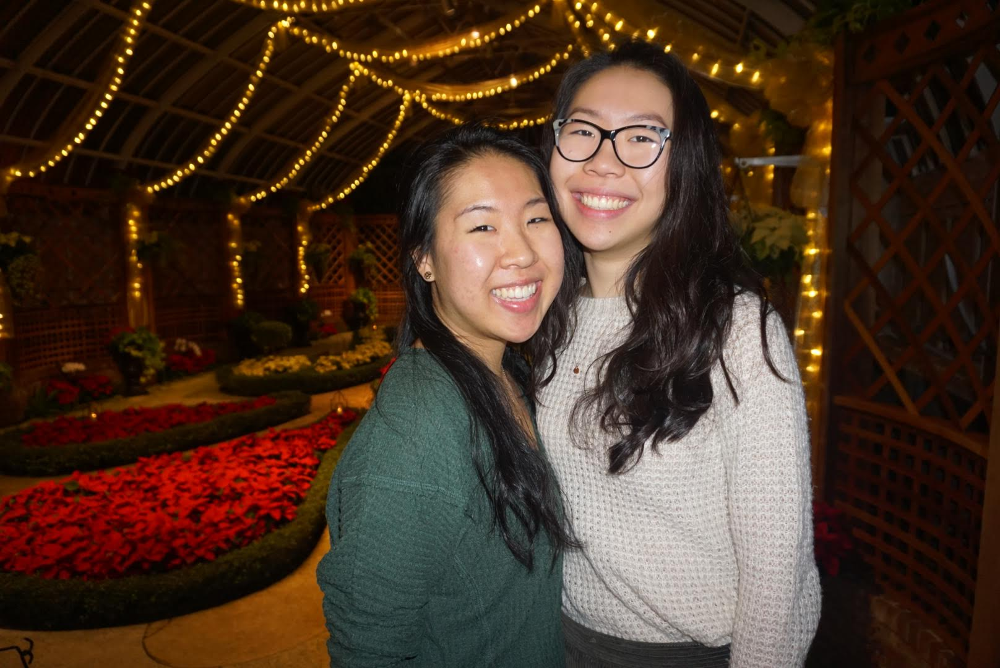
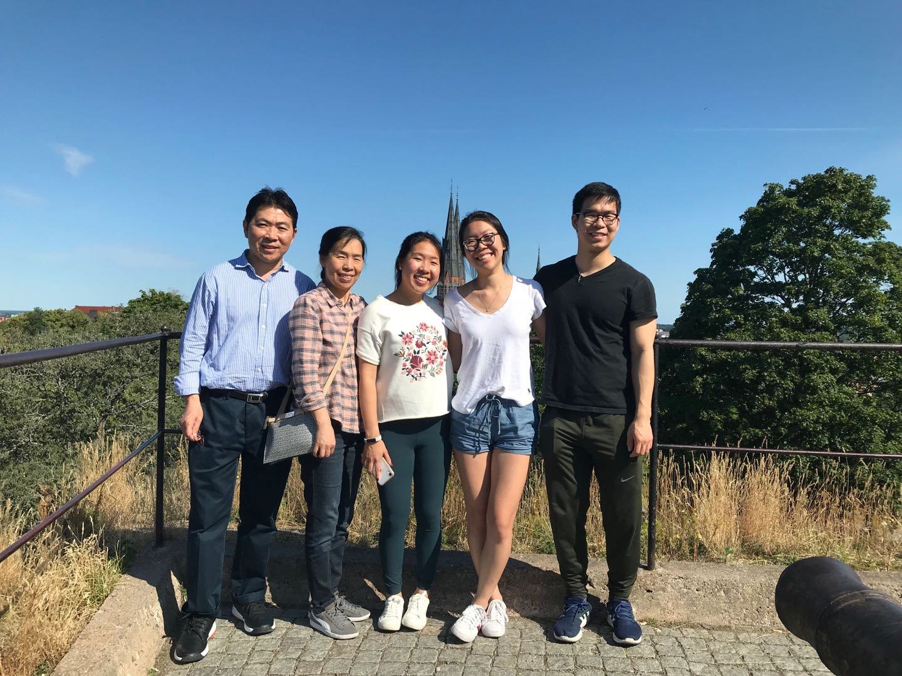
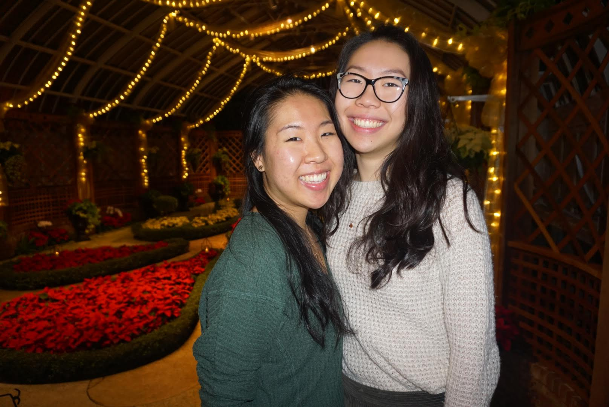
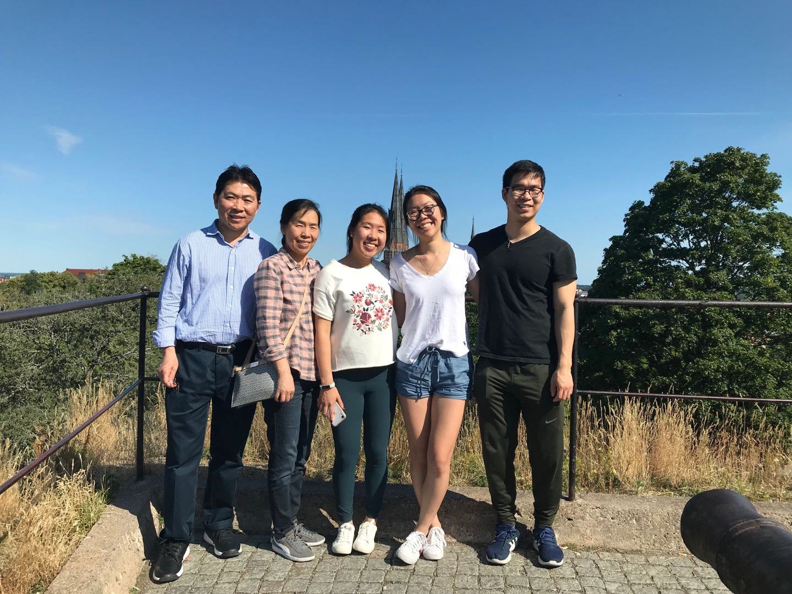

About me.
Currently a student in the class of 2022 at the University of Pennsylvania, graduate of North Allegheny Senior High School 2018. In high school, I was most dedicated to volunteering
around my community, playing in band, and taking art classes at a private studio. I knew I wanted to study computer science my senior year, and I excitedly joined the
Digital Media Design program at UPENN. At college, I became a teaching assistant for an introductory discrete math course for computer science
students for a year, and through this experience, I found a new interest in teaching! I started volunteering with a club on campus that teaches high school students how to make a website
about a social issue they are interested in. Last summer, I also became a camp instructor for a local summer camp, teaching the cutest middle schoolers introductory computer science topics,
including game design, python, and solving challenges with VEX IQ robots. I plan to start this fall as a teaching assistant for a computer graphics course open to undergraduate and masters students.
Born in Queens in NYC with my (older) twin sister and grew up with an older brother. I don't remember too much about NYC because my family moved to Pittsburgh, PA a few years later,
and we still live there now. We live by a beautiful park that I enjoy to walk, kayak, and ice skate at with friends. The park surrounds a big lake that looks incredible during sunsets.
Love to cook, cross stitch, watch movies, and go on walks with my sister. I recently picked up on embroidery--it's a learning process.
 



Click here to get a random fact about me: